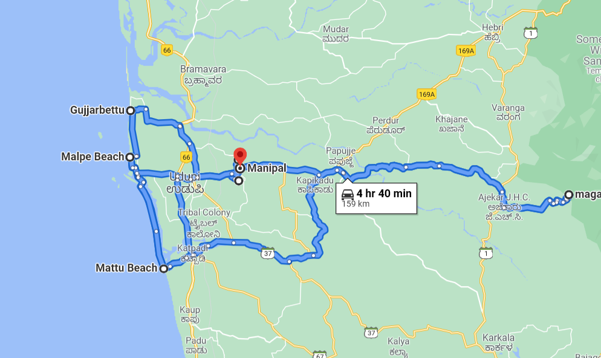

Manipal December 2021—2-day birding blitz
Itinerary
Mon, 27 Dec (sunrise 06:41, sunset 18:03)
06:15 Deboard bus in Manipal
Walk to End Point hotspot (2.7 km, < 30 min)
06:45 End Point
Walk around for 2 h. 40-50 species possible. Herga and Shettybettu for later. RuWo, babblers (RuBa, DFBa, ISBa), thrushes (OHTh), GrJu, starlings (MaSt), bulbuls (FTBu), MPHo, AFBl
08:45 Start walking to ZoomCar pickup (Country Inn)
09:00 Arrive at ZoomCar pickup
Also find light and quick breakfast around.
10:00 Depart in ZoomCar
10:15 Manipal Lake (Map)
Try to finish in 1 h. Around 30-35 species. Main tick: Tufted Duck.
11:15 Leave for Gujjarbettu paddyfields
11:45 Gujjarbettu paddyfields (Map) (Hotspot)
Spend 30 mins scanning for interesting birds. Waders, raptors, hornbill, munias, etc. Then move to Malpe.
12:30 Malpe Port (Map) (Hotspot)
Walk along beach, watch rocks for congregations of terns and waders. Around 20-25 species. Jaeger, gulls, terns, WRHe, StHe, WBSE, frigatebirds(?). Spend around one hour here, then move for lunch.
13:30 Lunch (max. 45 mins) from Malpe
14:15 Malpe sandbar
Move south along sandbar, possible stops at multiple locations. Look out for interesting flocks. Move south till Mattu Beach area, possible quick stop there.
17:00 Start for Andar
50 km, roughly 1.5 h w/o stops. Possible stop for sunset en route. Maybe find dinner too.
20:00 Arrive at accommodation (Map)
If no dinner yet, find around. Night walk around 2 h.
23:00 Sleep
Tue, 28 Dec (sunrise 06:41, sunset 18:03)
05:00 Wake up!
Freshen up quick and possibly stop for chai. Ready to leave by 05:30 or 05:45.
06:00 Short birding around farm
Can try for thrushes and babblers. Maybe some fancy warblers/flycatchers. Possible: MaBa, MGHo, LiSp, GFGP, YFGP, MIPi, HSWo, SpPi, BEKi, Malabar Trogon!
07:00 Leave for Mattu beach
Possible stops en route, like Murathagudde viewpoint. Breakfast on the way.
09:30 Mattu beach to Malpe beach
Relaxed but focussed birding along beach/sandbar for pelagic and shorebirds. Multiple stops and lunch en route.
14:00 Leave for Manipal
14:30 Drop off car
And walk 3-4 km from dropoff to Herga.
15:00 Herga, Shettybettu
May not be possible to explore all places (Herga, Shettybettu, Saralebettu) fully.
Common Grasshopper-Warbler seen in 2017–18 winter on Herga Temple Road
19:00 Walk to Manipal and dinner
And relax till bus!
20:45 Board bus!
Approximate car travel
Total will be around 160 km, which is the free allowance, plus or minus a few.

Extra attention for:
- Shorebirds!!!
- Dark-fronted Babbler (End Point, anywhere)
- Tufted Duck (Manipal Lake)
- Nilgiri Wood-Pigeon (End Point, any forest area)
- Malabar Pied Hornbill (End Point, any forest area)
- Malabar Trogon (closer to Ghats, so near Karkala, farm)
- Common, Blyth’s, Alpine Swifts (anywhere, sky)
- Nilgiri and Thick-billed vs. Pale-billed Flowerpecker
- Small, Ashy and Orange Minivets
- Coppersmith vs. Malabar Barbet
- Sri Lankan Frogmouth (End Point, Herga, farm, anywhere!)
- Owls (farm, night walk)